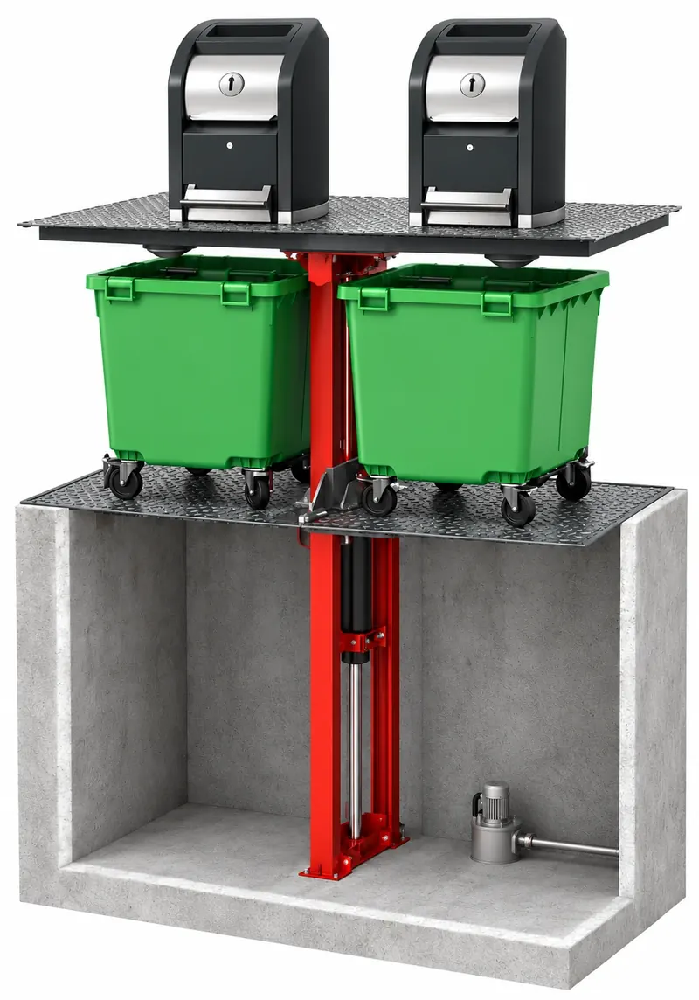
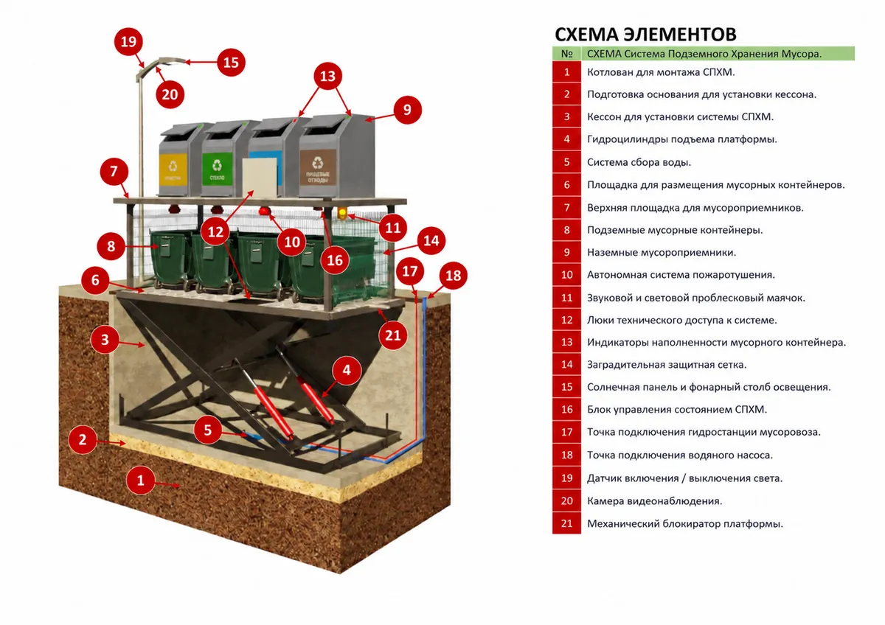

Страница подъёмника для мусорных контейнеров. Сейчас разрез стоит в квадрате, а схема — во всю ширину, и картинки получаются очень разного размера. Ниже четыре варианта, где они смотрятся как пара. Ширину окна можно менять: на телефоне всё встаёт в колонку.
Одна строка, одна высота. Каждая картинка сохраняет свою форму: узкий разрез и широкая схема стоят рядом одной высоты, текст под каждой.

Наверху — настил с мусороприёмниками, под ним — платформа с контейнерами. Всё опускается в бетонную шахту; мачта с гидроцилиндром поднимает платформу к приезду мусоровоза.

УвеличитьУсиленная платформа под выбранные контейнеры, гидроцилиндры от маслостанции, электрошкаф в аппаратной части приямка, пульт с обзором рабочей зоны.
Две одинаковые карточки 4:3. Рамки ровные, но разрез внутри своей рамки выглядит меньше, а легенда схемы — мельче; для схемы есть «Увеличить».
Наверху — настил с мусороприёмниками, под ним — платформа с контейнерами. Всё опускается в бетонную шахту.
Платформа, гидроцилиндры, маслостанция и электрошкаф в аппаратной части приямка, пульт с обзором рабочей зоны.
Одна большая рамка и переключатель «В разрезе / Схема элементов». Обе картинки показываются одного размера и крупно, текст слева меняется вместе с картинкой.
Наверху — настил с мусороприёмниками, под ним — платформа со стандартными контейнерами. Всё опускается в бетонную шахту, на поверхности остаётся только настил. Мачта с гидроцилиндром поднимает платформу к приезду мусоровоза.
Основа — усиленная платформа под выбранные контейнеры. Её поднимают гидроцилиндры от маслостанции; станция и электрошкаф стоят в аппаратной части приямка. Пульт ставят так, чтобы оператор видел всю рабочую зону.
Схема — главная и крупная, разрез — узкой колонкой той же высоты слева, как пояснение к ней. Тексты — под своими картинками.
Настил с мусороприёмниками сверху, платформа с контейнерами — в шахте.
Платформа, гидроцилиндры, маслостанция и электрошкаф в аппаратной части приямка; пульт с обзором рабочей зоны, по запросу — проводной или радиопульт.